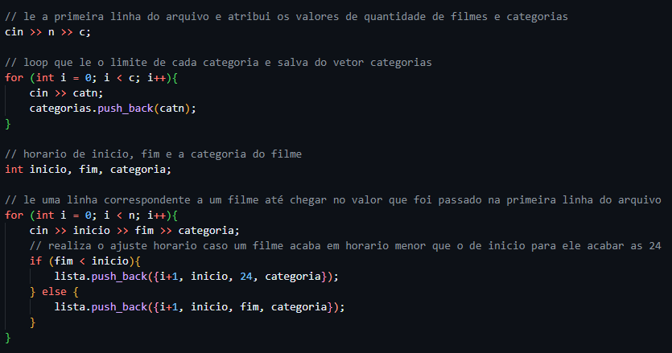
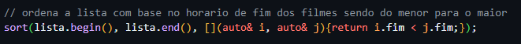
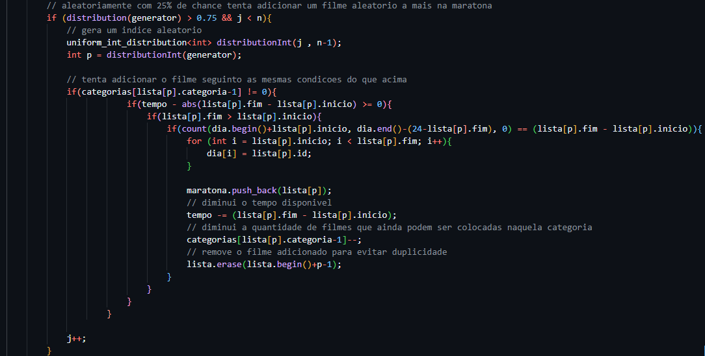
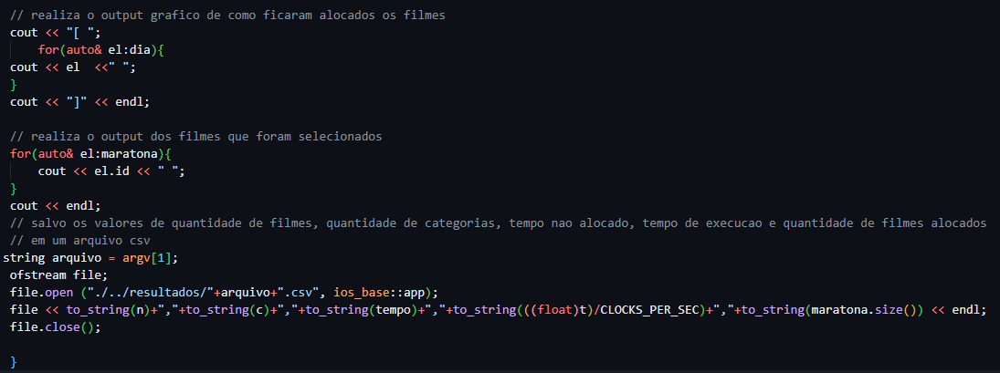
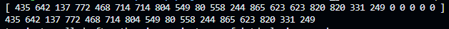

Todos os códigos expostos nesse relatório podem ser acessados em: git
Implementação:
As heurísticas, gananciosa e aleatória, foram implementadas seguindo a seguinte lógica:
- Tratamento das entradas
- Aplicação das heurísticas
- Tratamento da saída dos resultados
Tratamento das entradas:
A formatação experada para o arquivo de input é na primeira linha quantidade de filmes quantidade de categorias, a segunda linha ser número de a quantidade de filmes em cada categoria e as demais linhas os filmes com hora que começa, hora que acaba e categoria.
Assim as entradas foram tradas seguinto a lógica do código abaixo, para ambas as heurísticas:
A lógica consiste em ler o arquivo em loop e gravar as entradas no vator lista, se o valor de inicio for menor ou igual que o do fim ela não sofre alterção, no caso contrario o valor de fim dela e modicado para 24, o ajuste é realizado dessa forma, pois filmes que ultrapasem o limite de um dia a parte dele que passou limete não é considerada para aquele dia de maratona. Caso houvesse mais um dia de maratona esse periodo seria considerado nele.
Aplicação das heurísticas:
Para a aplicação da heurística gananciosa o sua invariante é a ordenação do vetor de filmes com base no horário de termino, como pode ser visto na imagem abaixo:
Para a aleatória a sua invariante é ter 25% de chance de adicionar um filme qualquer a mais, como está presente no trecgo de código abaixo:
Tratamento da saída dos resultados:
A formatação da saída segue a seguinte o lógica, ambos programas imprimem no console uma representação da alocação dos filmes no dia e também quais filmes foram escolhidos. Além disso eles salvam os valores de quantidade de filmes, quantidade de categorias, tempo não alocado, tempo de execução e quantidade de filmes alocados em um arquivo csv, o código responsável por isso pode ser visto abaixo:
A saída do terminal a primeira linha pode ser interpretada da seguinte forma, os valores entre [] representam as horas do dia, todos os números diferentes de zero são ids dos filmes e eles representam que a hora do vetor foi prenchida pelo filme com esse id, o zero significa que aquela hora não foi preenchida com nenhum filme. A segunda linha no terminal são os filmes que forma escolhidos.
Profiling:
As heurísticas foram
Resultados:
Filmes totais x Filmes vistos:
Observando os gráficos acima é nítido que para a heurística aleatória quantidade de filmes não impacta quantidade filmes vista, enquanto para a gananciosa impacta, contudo apenas até 1000 filmes acima desse valor a pouca variação.
Categorias x Filmes assistidos:
Agora analisando a quantidade assisitida em relação a quantidade de categorias é claro que ambas as heurísticas sem beneficiam de uma maior quantidade de categorias, entretanto a gananciosa se tem um benéficio maior conseguindo chegar a 24 filmes.
Filmes x Tempo de Execução:
Do ponto de vista do tempo de execução do programas é claro que quanto mais filmes mais tempo demora para executar, isso ocorre para ambas as heurísticas, mas a aleatória sofre com crescimento maior de tempo de execução do que a gananciosa.
Categorias x Tempo de Execução:
Agora analisando o tempo de execução em relação a quantidade de categorias, os resultados mostram que a quantidade de categorias é pouca impactante para ambas as heurísticas, afetando um pouco a gananciosa quando poucas categorias, mas apartir de 8 categorias não ocorrem mudanças significativas, vale ressaltar que a aleatória apresenta uma variação maior de resultados, porém não é apresentado um padrão que indique que a quantidade de categorias esteja afetando de forma positiva ou negativa os resultados.